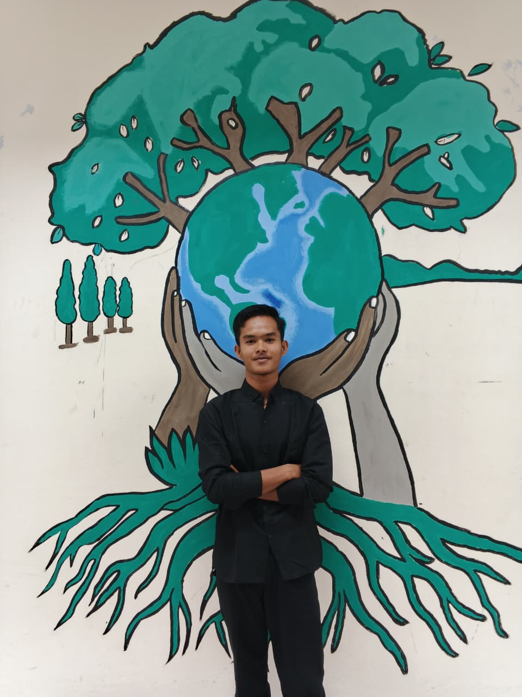
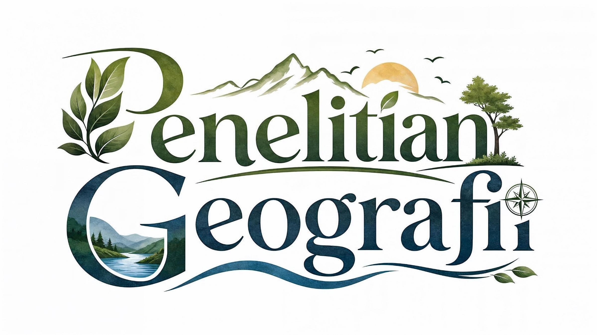

Identitas Peserta Didik
TUJUAN PEMBELAJARAN
Memahami Konsep Dasar
Menjelaskan pengertian, sifat-sifat khusus, dan karakteristik ilmiah dari penelitian geografi pada fenomena geosfer.
Mengidentifikasi Jenis Penelitian
Mengklasifikasikan penelitian berdasarkan Tujuan (Eksploratif, Deskriptif, Eksplanatif), Metode, dan Jenis Data.
Menganalisis Tahapan Penelitian
Menyusun urutan sistematis dari perumusan masalah, pengumpulan data, analisis data, hingga penyusunan laporan.
Peta Jalur Pembelajaran Penelitian Geografi
Pilar 1: Karakteristik
Berbasis fenomena geosfer, penggunaan peta & pendekatan keruangan/ekologi.
Pilar 2: Klasifikasi Jenis
Tujuan (3 jenis), Metode Pelaksanaan (3 jenis), & Bentuk Data (Kualitatif/Kuantitatif).
Pilar 3: Tahapan Kerja
Alur sistematis dari rumusan masalah geosfer hingga laporan ilmiah.
Pengertian Penelitian Geografi
Penelitian Geografi adalah kegiatan ilmiah yang dilakukan secara sistematis untuk memecahkan masalah-masalah geosfer (atmosfer, hidrosfer, litosfer, biosfer, dan antroposfer) dengan menggunakan pendekatan khas geografi, yaitu **Pendekatan Keruangan (Spasial)**, **Pendekatan Lingkungan (Ekologi)**, dan **Pendekatan Kompleks Wilayah**.
Ciri & Sifat Penelitian Geografi (Klik untuk melihat detail):
Berlandaskan metode ilmiah dan teori ilmu pengetahuan geografi yang rasional.
Berfokus pada gejala alam & fenomena sosial di permukaan bumi.
Bertujuan memberi solusi praktis bagi permasalahan tata ruang & lingkungan.
Jenis Penelitian Geografi Berdasarkan Tujuan
Berdasarkan tujuannya, penelitian geografi terbagi menjadi 3 jenis utama:
Penemuan Fenomena Baru
Bertujuan untuk mendalami atau menggali dasar pengetahuan mengenai fenomena geosfer baru yang belum diketahui banyak orang.
Penjelasan Rinci & Sistematik
Lanjutan dari eksploratif, bertujuan untuk mendeskripsikan fenomena geosfer secara detail, faktual, dan tersusun rapi.
Uji Hubungan Sebab-Akibat
Bertujuan menemukan penyebab suatu fenomena geosfer dan menguji hipotesis hubungan antarvariabel.
Berdasarkan Metode Pelaksanaan
- A. Studi Kasus Penelitian mendalam pada lokasi atau fenomena spesifik melalui lapangan & wawancara.
- B. Survei Pengumpulan data sampel dari populasi luas untuk menguji kesimpulan sementara/hipotesis.
- C. Eksperimen Penelitian dengan memberikan perlakukan variabel kontrol dan kelompok uji.
Berdasarkan Metode & Bentuk Data
Menggunakan data angka, pengukuran persentase, statistik, dan angket/kuesioner terstruktur.
Menggunakan data narasi deskriptif, hasil wawancara mendalam, dan observasi kualitatif.
6 Tahapan Utama Langkah Penelitian Geografi
Uji Pemahaman Penelitian Geografi
Loading pertanyaan...
Pasangkan Istilah dengan Definisi yang Tepat!
Bobot: 35 Poin TotalKlik satu kartu di kolom Kiri, lalu klik pasangan jawabannya di kolom Kanan.
Kelompokkan Jenis Penelitian Ini!
Bobot: 30 Poin TotalPilih kartu item di bawah, lalu klik wadah kategori yang sesuai.
Berdasarkan Tujuan
Metode Pelaksanaan
Bentuk Data
Hasil Pembelajaran & Sertifikat Digital
Selamat! Kamu telah menyelesaikan seluruh rangkaian media pembelajaran ini.
SERTIFIKAT KOMPETENSI
Diberikan Sebagai Penghargaan Kepada:
Nama Murid
Kelas: X-1 | Sekolah: SMAN 1
Telah berhasil menyelesaikan Modul & Gim Edukasi Interaktif pada materi:
"Penelitian Geografi dan Jenis-Jenisnya" (Fase E Kelas X SMA)
Tanggal Selesai:
25 September 2026
Guru Pengampu:
Guru Geografi Fase E